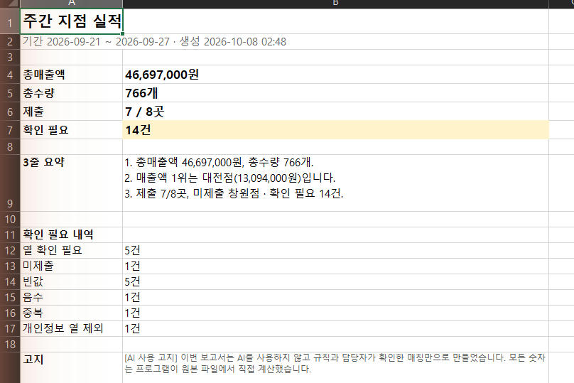
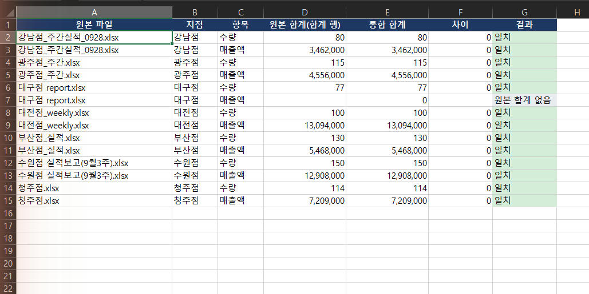

매주 되풀이되는 사무 일,프로그램이 대신합니다.
지점 엑셀 합치기, 쌓인 리뷰 정리처럼 어렵지 않지만 틀리면 안 되는 일을 맡깁니다.
비밀번호·계정은 절대 여쭤보지 않습니다. 2일 안에 답을 드립니다.
엑셀 자동 취합 · 2026-11-23 기준 · 실제 회사 자료로 잰 숫자는 아직 없습니다
- 317개자동 시험 통과
- 2,000개가상 엑셀을 합쳐 본 결과, 합계가 한 번도 다르지 않음
- 0건AI 점검 5회 동안 틀린 자동 반영
어렵지 않은데 틀리면 안 되는 일,이런 말을 하게 됩니다.
- 매주 같은 엑셀을 열고, 같은 칸을 복사하고, 같은 합계를 다시 더해요.지점·거래처 엑셀을 합치는 담당자님
- 틀리면 안 돼서 아무도 대신해 주지 않아요. 월요일 아침이 통째로 사라져요.보고를 맡은 사무 담당자님
- 리뷰는 계속 달리는데, 하나하나 답할 시간이 없어요.스마트스토어·쿠팡 판매자님
- 자동화는 무서워요. 검은 창, 영어 화면, 키 발급…컴퓨터가 낯선 분
그래서 오토리는 만들기 전에,견본으로 되는지부터 돌려 봅니다.
지금 쓰시는 파일의 견본(개인정보를 지운 것)을 보내 주시면, 프로그램으로 되는지 안 되는지와 그 이유를 2일 안에 답해 드립니다. 확인은 무료이고, 안 되면 안 된다고 말씀드립니다.
아직 손으로 하고 계신 그 일,이렇게 맡기실 수 있습니다.
판매 중인 솔루션 2개와, 만들어 두었지만 아직 팔지 않는 데모 2개입니다.
엑셀 자동 취합
시범 고객 모집월요일 아침, 지점 엑셀 7개가 이름도 모양도 제각각 쌓여 있습니다.
- 모으기받는 폴더·전용 Gmail
- 열 맞추기모르면 여쭤봄
- 합치기줄마다 원본 위치
- 검산원본 합계와 대조
- 보고서 메일정한 요일에
리뷰 분석 + 답글 초안
크몽에서 판매 중리뷰는 쌓이는데, 같은 불만이 무엇인지 아무도 세어 보지 못했습니다.
- 리뷰 파일엑셀 또는 CSV
- 나누기감정·불만·급한 정도
- 답글 초안리뷰마다 다르게
- 사람 검수불만·급한 리뷰
- 개선 보고서근거 리뷰 번호
셀러 주문·정산 취합
데모 · 수요 확인 중스마트스토어, 쿠팡, 자사몰… 정산 파일의 모양이 채널마다 다릅니다.
- 채널별 파일4곳 이상
- 모으기줄마다 원본 위치
- 확인 필요 표시중복·빈칸·음수
- 보고서 1개합계 검산 포함
주문·송장 자동 정리
데모 · 수요 확인 중주문 엑셀과 운송장을 한 줄씩 맞춰 붙이고, 마켓마다 따로 올립니다.
- 주문 + 운송장마켓 3곳 · CJ대한통운
- 주문번호로 맞추기AI 쓰지 않음
- 확정 / 확인 필요애매하면 빼 둠
- 마켓별 송장 파일올리기는 직접
다른 반복 업무도 듣고 있습니다. 만들 수 있는지 먼저 솔직하게 답해 드립니다.
믿어 달라고 하지 않고,모든 결과에 근거를 붙입니다.
아래는 실제 프로그램이 만든 화면입니다. 들어간 숫자와 리뷰는 연습용·가상 자료입니다.

지점마다 파일 이름도 모양도 다를 때
받는 폴더에 넣어 두기만 합니다
이름이 제각각인 엑셀을 그대로 모읍니다. 처음 보는 열 이름만 여쭤보고, 한 번 알려 주시면 기억합니다.

누가 안 냈는지 메신저로 확인할 때
미제출 목록이 보고서 맨 위에
몇 곳이 냈는지, 무엇을 확인해야 하는지가 첫 장에 나옵니다.

합계가 맞는지 계산기로 다시 더할 때
원본 합계와 모은 합계를 매번 대조
모든 줄에 원본 파일·시트·행 번호가 붙고, 합계가 다르면 어느 파일인지 표시합니다.

어떤 불만부터 고쳐야 할지 모를 때
개선점마다 근거 리뷰 번호를
리뷰에 없는 내용은 지어내지 않고 "판매자님 확인 필요"로 비워 둡니다.
맡기시기 전에,이것부터 물어보십니다.
우리 자료가 밖으로 나가나요?
엑셀 취합은 PC 안에서만
엑셀 자동 취합은 담당자님 PC 안에서만 처리합니다. 리뷰 분석은 리뷰 내용이 구글 AI(Gemini)로 전송되며, 맡기시기 전에 먼저 말씀드립니다.
AI가 숫자를 바꾸지는 않나요?
계산은 프로그램 코드가
AI는 열 이름을 맞추는 "고르기"만 합니다. 모르는 것은 지어내지 않고 여쭤봅니다.
우리 일은 안 되면요?
안 된다고 말씀드립니다
PDF·사진·HWP처럼 아직 못 다루는 자료는 처음부터 말씀드립니다. 파일이 2~3개뿐이면 AI 채팅을 권해 드립니다.
맡겨 보신 분들의 말은,아직 없습니다.
2026년 10월에 문을 연 회사입니다. 지어낸 후기는 올리지 않습니다. 첫 고객의 말이 생기면 이 자리에 그대로 옮기겠습니다.
매주 손으로 하는 그 일,견본 하나로 먼저 확인해 보세요.
프로그램 이름을 몰라도 괜찮습니다. 어떤 일을, 지금 어떻게 하고 계신지만 알려 주세요.